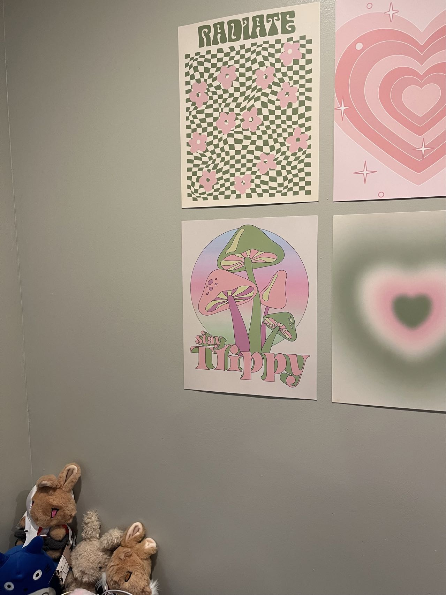
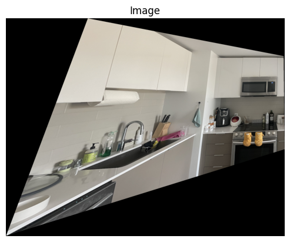

Image Warping and Mosaicing
Author: Shujing Hu
Project Overview
This project is focused on image warping and mosaicing, the first part of a larger project. The goal is to register, warp, and blend multiple images into a seamless mosaic by computing homographies and applying them to warp images.
Part 1: Shoot and Digitize Pictures
To start, I took several overlapping photos of a scene with projective transforms (rotating the camera without changing the point of view). This step ensures that the images can be aligned through homography transformations.
Sample flower 1
Sample flower 2

Sample bedroom 1
Sample bedroom 2
Sample kitchen 1
Sample kitchen 2
Part 2: Recover Homographies
I computed the homographies between each pair of images using corresponding points. I wrote a function computeH to calculate the 3x3 homography matrix from pairs of corresponding points in the images. I only put screenshot of the output for the kitchen pictures, and the rest could be found running main.ipynb.
Corresponding points between two kitchen images (used for homography calculation)
Part 3: Warp the Images
Using the computed homography, I warped the images to align them with the reference image. I used inverse warping to ensure proper interpolation and resampling, with special attention to the resulting image size and boundary conditions.
Warped flower image after applying the homography
Warped kitchen image after applying the homography
Part 4: Blending Images into a Mosaic
After warping the images, I used blending techniques to create a seamless mosaic. Instead of hard edge boundaries, I applied a weighted average and used Laplacian pyramid blending to minimize artifacts by changing the code from project 2.
Final mosaic flower image
Final mosaic bedroom image
Final mosaic kitchen image
Part 3.5: Image Rectification
For testing, I performed image rectification for the kitchen image, where I warped the surface of the microwave to a square. This ensures that the homographies and warping functions work correctly.
Rectified 0kitchen image
Challenges and Lessons Learned
One challenge was to determine the final canvas size and how to stack the images together. I used a scratch paper to carry the math out with concrete sample numebrs. I learned the importance of homography and matrix algebra.
Conclusion
This project taught me valuable insights into homography computation, image warping, and blending techniques. The mosaicing process allowed me to apply theoretical concepts to real-world images, creating a visually coherent result.